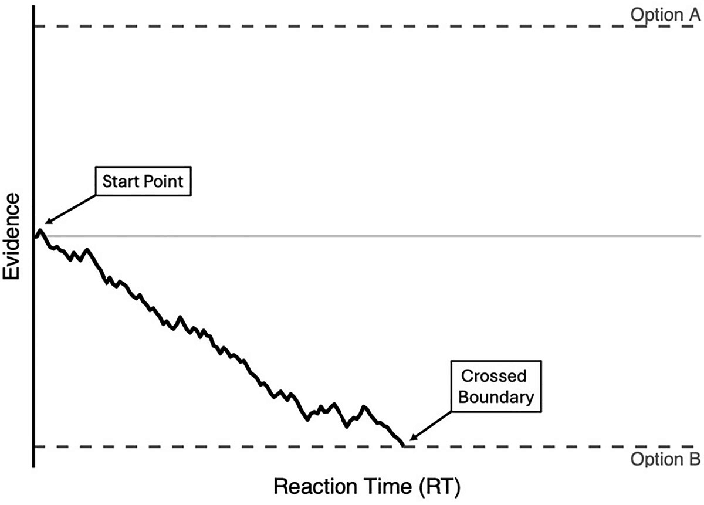
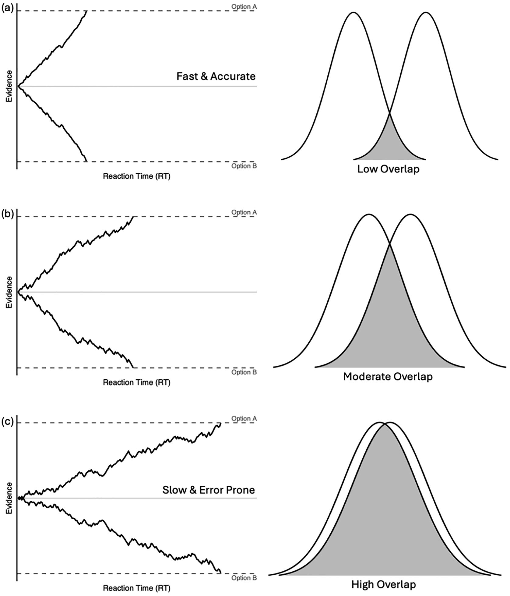
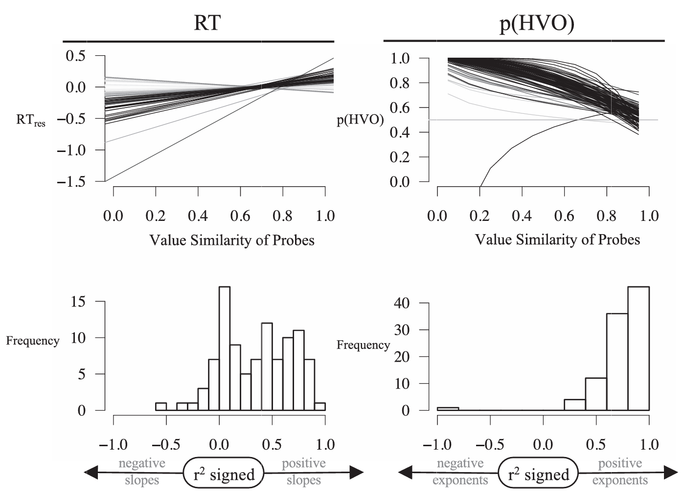
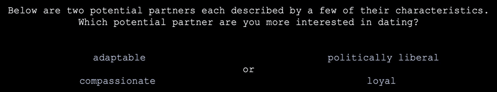
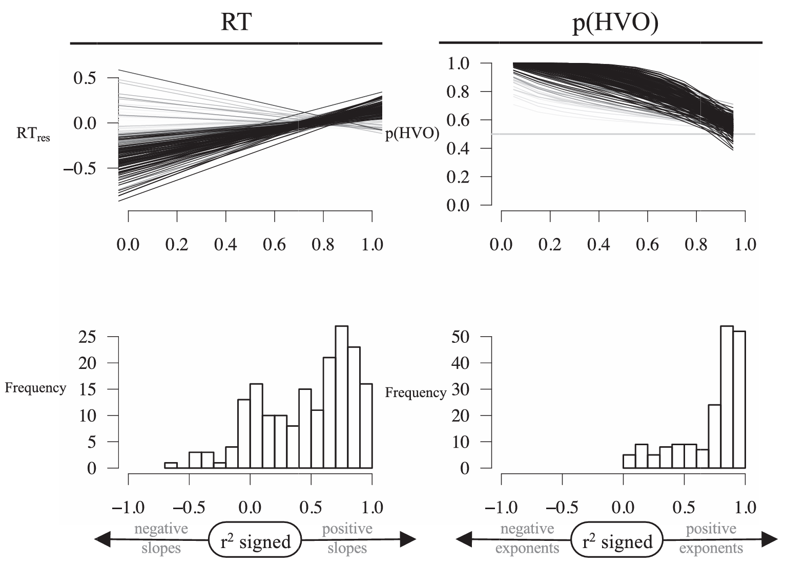

1 引言
- 对于浪漫决策的时间动态过程（temporal decision dynamics）理解不足
- 心理价值理论（Psychological Value Theory，PVT）：关于价值和选择的通用计算认知模型
- 如果适用，说明浪漫伴侣选择和其他社会决策一样，具有同样普遍的、基于价值的机制
1.1 伴侣价值
- 效用理论（Utility Theory）：面对多个选择时，选择价值最大的
- 对选择进行定量，这种定量就是价值（value）
- 选择与价值独立，用价值来预测选择
- 伴侣价值没有统一概念
- 进化视角：包括适应度（inclusive fitness），基因和繁衍优势
- 社会交换视角：社会利益和成本
- 从正反两面总结潜在伴侣的特征
- 对潜在伴侣的偏好（\(Pref\)）和预期（\(Prev\)）共同决定伴侣价值
- \(\text{Mate value}=\text{Pref}*\text {Prev}\)
- \(\text{Mate value}=\text{Pref}-\text {Prev}\)，理想标准模型（Ideal Standards Model）
- \(\text{Mate value}=\sum_{1}^{n}(Pref_{n}*Prev_{n})\)，线性加权求和
- \(\text{Mate value}=-1*\sqrt{\sum_{1}^{n}(Pref_{n}-Prev_{n})^{2}}\)，欧式距离
- 线性加权求和和欧式距离哪个更好均有支持
1.2 最初的浪漫伴侣选择
- 最初的选择基于较少的信息，但影响长期关系
- 关于浪漫决策的时间动态过程的研究较少
- PVT可以捕抓这种动态过程，且在很多社会决策中得到验证
- 利用独立于当前决策情境测得的价值，事先预测人们的选择和反应时
1.3 心理价值理论
- 心理价值：对观察者而言的重要性、价值、有用性（importance、worth、usefulness）的感知
- 受Axiom of Perceptual Variability支配，因此视心理价值是一个过程而不是一个点
- 使用数量估计任务（magnitude estimation task）测量
- 首先告知被试个人价值和货币价值无关（有些物品对个人而言有价值，但在市场上并没有）
- 给黑猩猩的价值（参照物）赋值1000，让被试评估自己、手机等人事物的价值（指针）
- 进化出的价值判断体系使不同个体对同一事物的价值判断趋同，因此每次判断可视为价值区间内随机抽样
1.4 决策
- 二元选择的决策，考虑到价值是个过程，点的估计是有瑕疵的
- 开发了一种基于价值的序贯抽样程序（sequential sampling procedure，SSP），将PVT变成一个模型，称为Robust Random Walk（RRW）
- 从两个选项的决策边界中间起步
- 每一时刻，从两个价值分布中抽取一个样本，样本之差决定随机游走方向
- 信息不断积累直到越过某个边间，期间的抽样次数可以预测反应时

- 图 2 展示了两个选项价值分布不同重叠情况下RRW的情况
- 重叠程度越高，越过边界就越难，越可能出错，需要的证据就越多
- 重叠程度较高，导致反应较慢且更容易出错
- 重叠程度较低，导致反应较快且更准确

- RRW和传统SSP差异
- RRW用区间来预测选择和反应时
- RRW从多个重叠中进行预测
- RRW只需要更少的参数
1.5 本研究
- 实验1：身份认同的影响
- 实验2：综合多个特征
2 实验1
- 二选一迫选任务
- 两个潜在约会对象中选择一个进行约会，每个对象用一个特征进行描述
- 记录选择和反应性，用 Cohen et al. (2022) 得到的数据进行预测
- 如果预测成功，说明伴侣选择就是心理价值分布所组成的函数可以预测的
2.1 方法
2.1.1 被试
- 108名被试；19.32±1.48岁；71%性别认同女、28%男、1%其他
- 之前研究表明效应量很大，所以较大样本量主要是可推广性而不是显著性，设定为100人
2.1.2 设备和刺激
- 网络链接，自选设备进入
- 73个特征，有放回随机抽样,从 表 1 中剔除普遍性的和少见的
- 红色注视点 → 500ms → 如 图 3 文本，但特征词被星号隐蔽 → 2400ms → 显示特征词 →
d和k键决定上下（每个被试随机） - 性别认同和年龄
2.2 程序
- 知情同意、人口学、学分、伦理审核等固定流程
- 10试次练习，练习时会重复出现任务要求和提示
- 250个试次，一半时让被试选择自由休息时间
2.3 结果
2.3.1 心理价值
- 根据 Cohen et al. (2022) 的结果对心理价值进行赋值
- 对两个特征进行bootstrap 1000次，记录特征A大于特征B的概率为\(meanP\)，之后 \(Overlap = 1-\frac{abs(meanP-0.5)}{0.5}\) 得到重叠度
- 以0.1为精度四舍五入，并以0.1为区间进行分组（0到0.1,0.1到0.2……），用理论中值代表该组（0.5；0.15……），标记为 \(O_{0.1}\)
2.3.2 选择数据
- 通过反应时的变异系数（\(\mathrm{CV_{RT}=SD_{RT}/M_{RT}}\)）进行筛选，剔除了最高5%的被试6人
- 选择表现低于或处于随机水平的被试3人，说明注意力不足
- 得到99人，70%女
- 每个 \(O_{0.1}\) 分箱剔除反应时最高和最低2.5%
- 通过 \(log(\mathrm{RT})=a*\exp{(b*\left(\mathrm{trial-1}\right))}\) 来消除练习造成的熟练度对反应时的影响，残差 \(RT_{res}\) 作为反应时
2.3.2.1 RRW分析
- RRW测量
- 选择较高价值选项的概率，\(p(HVO)\)
- 选择较高价值选项的反应时，\(RT_{HVO}\)
- 选择较低价值选项的反应时，\(RT_{LVO}\)
- RRW包含的参数
- 非决策时间 \(T_{er}\)，本质上是一个截距项，用于解释与Overlap无关的各种过程所花费的累计时间
- 起点 \(s\)
- 边界间距 \(b\)
- 向抽样过程加入噪声的误差参数 \(N_{SD}\)
- 信息积累偏差（Information Accrual Bias，IAB）中的两个参数 \(d_A\) 和 \(d_B\)
- 衡量近因偏差或首因偏差
- 将 \(d_A\) 固定为0.2
- \(d_B\) 根据数据进行拟合
- 当 \(d_A\) 固定且 \(d_B\) 为正时，表示知觉上较新的信息，比知觉上较早的信息具有更大的决策权重
- 评估了简单模型和位置偏差模型
- 简单模型
- 假设不存在反应偏差，且价值估计是准确的
- 四个自由参数：边界位置 \(b\)、非决策时间 \(T_{er}\)、误差参数 \(N_{SD}\)，以及由 \(d_B\) 参数表示的信息近因影响
- 位置偏差模型
- 用于评估被试是否总体上偏好位于上方或下方的选项
- 增加了一个自由参数，用于描述起点朝偏好位置选项所对应边界的偏移
- 较低价值选项位于上方的情境，记为 \(Top_{LVO}\)，下方记为 \(Top_{HVO}\)，分别编码为1和-1
- 将编码后的结果和起点 \(s\) 相乘，使两类试次的起点围绕零起点产生对称的正向或负向偏移
- 简单模型
- 对整体数据进行重叠度×跨越边界×偏差效应编码，得到稳定反应时和 \(p(HVO)\) 估计
- 部分重叠度低，但选择了价值更低的选项的试次被认为是错误试次，去除了少于40次的这类试次（3组低重叠）
- 使用自行开发的Smart Grid Search algorithm调参
- 最佳拟合模型运行40次，取每个重叠度下的预测反应时和 \(p(HVO)\) 的均值，用这一均值来预测拟合结果的 \(r^2\) 和BIC
- BIC更低更优，如BIC差值在2以内，参数更少更优
- 必须满足以下所有条件PVT才能预测选择
- 选择是基于价值的偏好决策
- 数量估计任务可以准确测量抽象概念的心理价值
- 抽象概念的心理价值和特征的心理价值等价
- RRW可以准确模拟心理价值产生的决策
- 整体来看
位置偏差模型拟合效果更好（\(r^2=0.9\)，BIC = 55）
| Free parameters | Model fit | ||||||||
|---|---|---|---|---|---|---|---|---|---|
| Ter | b | dB | nSD | sP | bTQ | vcTQ | r2 | BIC | |
| Single feature | −0.79 | 55 | 0.03 | 4.75 | −0.04 | − | − | .90 | 55 |
2.3.2.2 3折效度检验
- 三等分，三个分别做一次测试集，另外两个做训练集
- 平均 \(r^2=0.88\)，标准差为0.01，考虑到测试集样本量小，结果的可靠合理的
2.3.2.3 性别
- 表 2 的参数不变，\(T_{er}\) 可变
- 男女拟合效果无显著差异，说明性别不影响判断
2.3.2.4 个体被试分析
- 整体拟合良好，但个体也需要考虑
- 使用 \(p(HVO)=(1-a)*\left(1-Overlap^{b}\right)+a\) 和 \(RT=a+b*Overlap\) 来拟合每个被试
- 基于PVT，斜率一定为正，所以斜率为负的 \(r^2\) 乘-1，转换后的 \(r^2\) 记为 \(r^2_{signed}\)

- 图 4 展示了个体拟合情况
- 反应时
- \(r^2_{signed}\) 均值为0.35，标准差为0.33，\(t(98)=10.63\)，\(p<.001\)，\(d=1.06\)
- 拟合程度分布较广，但考虑到 \(d=1.06\)，可认为稳健
- 选择
- \(r^2\) 均值为0.74，标准差为0.24，\(t(98)=29.98\)，\(p<.001\)，\(d=3.08\)
- 预测准确，稳健
2.4 讨论
- PVT能够准确预测初始择偶选择
- 初始择偶选择是一种基于价值的偏好决策
- 数量估计任务能够准确测量特征价值
- 抽象概念的心理价值与相应特征的心理价值相似
- RRW模型能够准确描述初始择偶选择背后的决策过程
3 实验2

- 实验2比较一个或两个特征，如 图 5 所示
- 使用求和、平均、无偏欧氏距离、乐观欧氏距离和偏向平均算法多个算法检验
- Summation algorithm：伴侣价值等于各价值之和
- Averaging algorithm：伴侣价值等于各价值均值
- Unbiased Euclidean Distance：特征越多值越低，只有 \(Pref-Prev\) 为0才不降低
- Optimistic Euclidean Distance：未提及的特征默认 \(Pref-Prev\) 为0
- Biased Averaging：心理价值同时受最大值（特征分布整体更大的）和均值影响，\(\left[\operatorname{Max}(\text{Psychological Value})+\operatorname{Average}(\text{Psychological Value})\right]/2\)
3.1 方法
3.1.1 被试
- 200名被试；19.16±3.07岁；84%性别认同女、15%男、1%其他
3.1.2 设备和刺激
- 指导语修改，提示多特征
- 上下选择换成左右
- 200试次，四种情况（都2特征，都1特征，左1右2，左2右1）各50次
- 规避矛盾特征
3.1.3 程序
- 和实验1相同，但减少了试次
3.2 结果
3.2.1 计算刺激组的心理价值
- 和实验1类似，如果是组合则根据不同算法进行计算
- Summation algorithm：直接相加比较
- Averaging algorithm：两个分布合并为向量，比较向量的抽样
- Biased Averaging：呈现的特征中，先按照Averaging algorithm计算，再根据40%和60%的权重将Averaging algorithm的值和最大值的抽样相加
- Euclidean Distance
- 假设最高价值特征的理论均值为 \(Pref\)，记为 \(\text{maxVal}\)
\[ \mathrm{mateValue}=\frac{-1\times\sqrt{\displaystyle\sum_{1}^{n}(\mathrm{maxVal}-\mathrm{Prev}_n)^2}+\sqrt{\mathrm{numFeatures}\times\mathrm{maxVal}^{2}}}{\sqrt{\mathrm{numFeatures}\times\mathrm{maxVal}^{2}}} \]
- 无偏欧式距离根据特征数进行缩放，乐观欧氏距离固定是两个特征
- 欧氏距离是点估计，所以视相对平均距离为重叠度，越近说明重叠度越高
- \(\operatorname{abs}(\text{Partner A}-\text{Partner B})\)，之后缩放到0-1，为了和Overlap对应，0最大差值，1最小差值
- 如果RRW无法拟合，说明上述假设不成立
3.2.2 RRW分析
- 和实验1类似，但使用5种算法进行了评估
- 如果两个选项特征数相同，5种算法得到的重叠度是类似的
- 如果两个选项特征数不一致，部分算法会出现系统偏离，有时会高估特征整合，有时会低估
- 四种组合×Overlap分箱来判断 \(p(HVO)\)
- 四种组合×Overlap分箱×选择结果来判断反应时
- 提出以下5种模型
- 位置偏差模型：实验1一致
- 位置偏差+边界模型：增加一个用于评估随特征数量增加，决策边界是否变化的参数，反应了数量增加对阅读和整合信息消耗时间的影响
- 位置偏差+价值变化：增加一个用于评估随特征数量增加，分布重叠程度是否变化的参数，反应了对价值整合的高估和低估
- 位置偏差+边界+价值变化：同时评估边界变化和价值变化
- 简单+边界+价值变化：位置偏差+边界+价值变化效果更好时再拟合该模型，查看位置偏差是否增加了预测能力
3.2.2.1 最佳拟合
- Summation algorithm高估了整合；Biased Averaging准确评价了价值；其他的低估了整合
- 所有最佳算法中均包含边界参数 \(b_{TQ}\)
- 额外处理一个特征（4个特征）时，边界提高25%-35%
- 需要更多抽样，预测的反应时和准确度都会提高
- 价值变化参数 \(vc_{TQ}\) 为正说明对多特征高估了，为负则低估了，以标准差为单位
- Summation algorithm高估了约2.1个标准差
- Biased Averaging低估了约0.05个标准差（不添加对拟合没有太大影响）
- 其他算法低估了0.28-0.5个标准差
- 不添加 \(vc_{TQ}\)，除Biased Averaging外，预测效果均明显降低
- 选择Biased Average Grouping作为最佳模型
3.2.2.2 3折效度检验
- 平均 \(r^2=0.80\)，标准差为0.03
3.2.3 个体被试分析

- 反应时
- \(r^2_{signed}\) 均值为0.47，标准差为0.38，\(t(181)=16.76\)，\(p<.001\)，\(d=1.24\)
- 选择
- \(r^2\) 均值为0.73，标准差为0.26，\(t(181)=37.78\)，\(p<.001\)，\(d=2.81\)
3.3 讨论
- Biased Averaging无需校正可以很好拟合
4 综合讨论
- 初始恋爱伴侣选择涉及一种通用的、基于价值的认知机制
- PVT可以很好的评估价值的分布的作用，考虑到了随机性在伴侣选择这一认知过程中的作用
- Biased Averaging的优势可能来自于：高价值刺激对注意的捕获
- 特征价值评估的个体差异相对较小
4.1 未来研究与局限
- 局限
- 单一大学被试，样本代表性不足；但在其他领域PVT可以很好的预测跨文化被试的选择
- 情境性不足
- 欧氏距离算法和重叠度的关系还是基于假设，并没有实质证据
- 本研究认为 \(vc_{TQ}\) 是负担，不需要的模型更优，但这可能就是认知的实际情况
- 未来研究
- 利用PVT辨析情境因素影响的原因
- 喜欢距离更近的是不是因为距离影响了价值判断
- 反应偏向，决策过程从一开始就偏向距离较近的选项
- 利用PVT辨析情境因素影响的原因
参考文献
Cohen, D. J., Cromley, A. R., Freda, K. E., & White, M. (2022). Psychological value theory: The psychological value of human lives and economic goods. Journal of Experimental Psychology: Learning, Memory, and Cognition, 48(12), 2015–2050. https://doi.org/10.1037/xlm0001047
Cohen, D. J., White, T. D., & Luo, S. (2026). Psychological value theory: Predicting initial romantic partner choice from a general-purpose, computational cognitive model of value-based choice. Cognitive Science, 50(2), e70181. https://doi.org/10.1111/cogs.70181